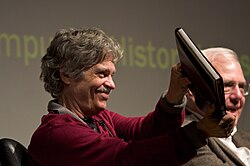
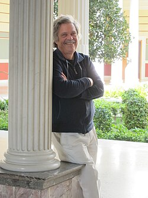

Alan Kay | |
|---|---|
 Alan Kay holding the mockup of the Dynabook | |
| Born | Alan Curtis Kay May 17, 1940 |
| Education | University of Colorado, Boulder (BS) University of Utah (MS, PhD) |
| Known for | Dynabook Object-oriented programming Smalltalk Desktop metaphor Graphical user interface Windows |
| Spouse | Bonnie MacBird |
| Awards | ACM Turing Award (2003) Kyoto Prize Charles Stark Draper Prize |
| Scientific career | |
| Fields | Computer science |
| Institutions | Xerox PARC Stanford University Atari Inc. Apple Inc. ATG Walt Disney Imagineering UCLA Kyoto University MIT Viewpoints Research Institute Hewlett-Packard Labs |
| Thesis | FLEX: A Flexible Extendable Language (1968) |
| David C. Evans Robert S. Barton | |
Notable students | David Canfield Smith |
.jpg){kind=link}
Alan Curtis Kay (born May 17, 1940)[1] is an American computer scientist who pioneered work on object-oriented programming and windowing graphical user interface (GUI) design. At Xerox PARC he led the design and development of the first modern windowed computer desktop interface. There he also led the development of the influential object-oriented programming language Smalltalk, both personally designing most of the early versions of the language and coining the term "object-oriented." He has been elected a Fellow of the American Academy of Arts and Sciences, the National Academy of Engineering, and the Royal Society of Arts.[2] He received the Turing Award in 2003.[3]
Early life and work
In an interview on education in America with the Davis Group Ltd., Kay said:
I had the misfortune or the fortune to learn how to read fluently starting about the age of three, so I had read maybe 150 books by the time I hit first grade, and I already knew the teachers were lying to me.[4]
Originally from Springfield, Massachusetts, Kay's family relocated several times due to his father's career in physiology before ultimately settling in the New York metropolitan area.
He attended Brooklyn Technical High School. Having accumulated enough credits to graduate, he then attended Bethany College in Bethany, West Virginia, where he majored in biology and minored in mathematics.
Kay then taught guitar in Denver, Colorado for a year. He was drafted into the United States Army, then qualified for officer training in the United States Air Force, where he became a computer programmer after passing an aptitude test.
After his discharge, he enrolled at the University of Colorado Boulder and earned a Bachelor of Science (B.S.) in mathematics and molecular biology in 1966.
In the autumn of 1966, he began graduate school at the University of Utah College of Engineering. He earned a Master of Science in electrical engineering in 1968, then a Doctor of Philosophy in computer science in 1969. His doctoral dissertation, FLEX: A Flexible Extendable Language, described the invention of a computer language named FLEX.[5][6][7] While there, he worked with the "fathers of computer graphics" David C. Evans (who had recently been recruited from the University of California, Berkeley to start Utah's computer science department) and Ivan Sutherland (best known for writing such pioneering programs as Sketchpad). Kay credits Sutherland's 1963 thesis for influencing his views on objects and computer programming. As he grew busier with research for the Defense Advanced Research Projects Agency (DARPA), he ended his musical career.
In 1968, he met Seymour Papert and learned of the programming language Logo, a dialect of Lisp optimized for educational purposes. This led him to learn of the work of Jean Piaget, Jerome Bruner, Lev Vygotsky, and of constructionist learning, further influencing his professional orientation. On December 9 of that same year he was present in San Francisco for the Mother of all Demos, a landmark computer demonstration by Douglas Engelbart. Even though he was sick with a high fever on that day, the event was very influential in Kay's career. He recalled later: "It was one of the greatest experiences in my life".[8]
In 1969, Kay became a visiting researcher at the Stanford Artificial Intelligence Laboratory in anticipation of accepting a professorship at Carnegie Mellon University. Instead, in 1970, he joined the Xerox PARC research staff in Palo Alto, California. Through the decade, he developed prototypes of networked workstations using the programming language Smalltalk.
Along with some colleagues at PARC, Kay is one of the fathers of the idea of object-oriented programming (OOP), which he named.[9] Some original object-oriented concepts, including the use of the words 'object' and 'class', had been developed for Simula 67 at the Norwegian Computing Center. Kay said:
I'm sorry that I long ago coined the term "objects" for this topic because it gets many people to focus on the lesser idea. The big idea is "messaging".[10]
While at PARC, Kay conceived the Dynabook concept, a key progenitor of laptop and tablet computers and the e-book. He is also the architect of the modern overlapping windowing graphical user interface (GUI).[11] Because the Dynabook was conceived as an educational platform, he is considered one of the first researchers into mobile learning; many features of the Dynabook concept have been adopted in the design of the One Laptop Per Child educational platform,[12] with which Kay was actively involved.
Subsequent work
From 1981 to 1984, Kay was Chief Scientist at Atari. In 1984, he became an Apple Fellow. After the closure of the Apple Advanced Technology Group in 1997,[13] he was recruited by his friend Bran Ferren, head of research and development at Disney, to join Walt Disney Imagineering as a Disney Fellow. He remained there until Ferren left to start Applied Minds Inc with Imagineer Danny Hillis, leading to the cessation of the Fellows program.
In 2001, Kay founded Viewpoints Research Institute, a nonprofit organization dedicated to children, learning, and advanced software development. For their first ten years, Kay and his Viewpoints group were based at Applied Minds in Glendale, California, where he and Ferren worked on various projects. Kay served as president of the Institute until its closure in 2018.
In 2002 Kay joined HP Labs as a senior fellow,[14] departing when HP disbanded the Advanced Software Research Team on July 20, 2005.[15] He has been an adjunct professor of computer science at the University of California, Los Angeles, a visiting professor at Kyoto University, and an adjunct professor at the Massachusetts Institute of Technology (MIT). Kay served on the advisory board of TTI/Vanguard.
Squeak, Etoys, and Croquet
In December 1995, while still at Apple, Kay collaborated with many others to start the open source Squeak version of Smalltalk. As part of this effort, in November 1996, his team began research on what became the Etoys system. More recently he started, with David A. Smith, David P. Reed, Andreas Raab, Rick McGeer, Julian Lombardi, and Mark McCahill, the Croquet Project, an open-source networked 2D and 3D environment for collaborative work.
Tweak
In 2001, it became clear that the Etoy architecture in Squeak had reached its limits in what the Morphic interface infrastructure could do. Andreas Raab, a researcher in Kay's group then at Hewlett-Packard, proposed defining a "script process" and providing a default scheduling mechanism that avoided several more general problems.[16] The result was a new user interface, proposed to replace the Squeak Morphic user interface. Tweak added mechanisms of islands, asynchronous messaging, players and costumes, language extensions, projects, and tile scripting.[17] Its underlying object system is class-based, but to users (during programming) it acts as if it were prototype-based. Tweak objects are created and run in Tweak project windows.
The Children's Machine
In November 2005, at the World Summit on the Information Society, the MIT research laboratories unveiled a new laptop computer for educational use around the world. It has many names, including the $100 Laptop, the One Laptop per Child program, the Children's Machine, and the XO-1. The program was founded and is sustained by Kay's friend Nicholas Negroponte, and is based on Kay's Dynabook ideal. Kay is a prominent co-developer of the computer, focusing on its educational software using Squeak and Etoys.
Reinventing programming
Kay has lectured extensively on the idea that the computer revolution is very new, and all of the good ideas have not been universally implemented. His lectures at the OOPSLA 1997 conference, and his ACM Turing Award talk, "The Computer Revolution Hasn't Happened Yet", were informed by his experiences with Sketchpad, Simula, Smalltalk, and the bloated code of commercial software.
On August 31, 2006, Kay's proposal to the United States National Science Foundation (NSF) was granted, funding Viewpoints Research Institute for several years. The proposal title was "STEPS Toward the Reinvention of Programming: A compact and Practical Model of Personal Computing as a Self-exploratorium".[18] STEPS is a recursive acronym that stands for "STEPS Toward Expressive Programming Systems". A sense of what Kay is trying to do comes from this quote, from the abstract of a seminar at Intel Research Labs, Berkeley: "The conglomeration of commercial and most open source software consumes in the neighborhood of several hundreds of millions of lines of code these days. We wonder: how small could be an understandable practical 'Model T' design that covers this functionality? 1M lines of code? 200K LOC? 100K LOC? 20K LOC?"[19]
{kind=link}

Personal life
Kay is a former professional jazz guitarist, composer, and theatrical designer.
He also is an amateur classical pipe organist.[20]
Kay is a grandson of author, illustrator, and photographer Clifton Johnson, and a nephew of sailor, adventurer, and writer Irving Johnson.
Kay is married to the writer, actress, and producer Bonnie MacBird.
Awards and honors
{kind=link}
{kind=link}
Kay has received many awards and honors, including:
- UdK 01-Award in Berlin, Germany for pioneering the GUI;[21] J-D Warnier Prix D'Informatique; NEC C&C Prize (2001)
- Telluride Tech Festival Award of Technology in Telluride, Colorado (2002)
- ACM Turing Award "For pioneering many of the ideas at the root of contemporary object-oriented programming languages, leading the team that developed Smalltalk, and for fundamental contributions to personal computing"[1] (2003)
- Kyoto Prize; Charles Stark Draper Prize with Butler W. Lampson, Robert W. Taylor and Charles P. Thacker[22] (2004)
- UPE Abacus Award, for individuals who have provided extensive support and leadership for student-related activities in the computing and information disciplines (2012)
- Honorary doctorates:
- – Kungliga Tekniska Högskolan (Royal Institute of Technology) in Stockholm[23] (2002)
- – Georgia Institute of Technology[24] (2005)
- – Columbia College Chicago awarded Doctor of Humane Letters, Honoris Causa[25] (2005)
- – Laurea Honoris Causa in Informatica, Università di Pisa, Italy (2007)
- – University of Waterloo[26] (2008)
- – Kyoto University (2009)
- – Universidad de Murcia[27] (2010)
- – University of Edinburgh[28] (2017)
- Honorary Professor, Berlin University of the Arts
- Elected fellow of:
- – American Academy of Arts and Sciences
- – National Academy of Engineering for inventing the concept of portable personal computing. (1997)
- – Royal Society of Arts
- – Computer History Museum "for his fundamental contributions to personal computing and human-computer interface development."[29] (1999)
- – Association for Computing Machinery "For fundamental contributions to personal computing and object-oriented programming."[30] (2008)
- – Hasso Plattner Institute[31][32] (2011)
His other honors include the J-D Warnier Prix d'Informatique, the ACM Systems Software Award, the NEC Computers & Communication Foundation Prize, the Funai Foundation Prize, the Lewis Branscomb Technology Award, and the ACM SIGCSE Award for Outstanding Contributions to Computer Science Education.
See also
References
- ^ a b "ACM Turing Award". 2003. published by the Association for Computing Machinery 2012
- ^ Kay, Alan (1997). The Computer Revolution Hasn't Happened Yet (Speech).
- ^ "Alan Kay | Biography, Inventions, & Facts | Britannica". www.britannica.com. Retrieved May 1, 2023.
- ^ "Interview with Alan Kay on education". The Generational Divide. The Davis Group. Retrieved March 5, 2011.
- ^ Kay, Alan (1968). "FLEX: A Flexible Extendable Language" (PDF). University of Utah. Archived from the original (PDF) on February 8, 2017.
- ^ Alesso, H. Peter; Smith, C.F. (2008). Connections: Patterns of Discovery. Wiley Series on Systems Engineering and Analysis, 29. John Wiley & Sons. p. 61. ISBN 978-0-470-11881-8. Retrieved August 15, 2015.
- ^ Barnes, S. B. "Alan Kay: Transforming the Computer Into a Communication Medium" (PDF). Engineering & Technology History Wiki. Archived from the original (PDF) on July 1, 2016.
- ^ Kennedy, Pagan (2016). Inventology: How we dream up things that change the world. Boston: Mariner Books. p. 115. ISBN 9780544811928.
- ^ Ram, Stefan L. (July 23, 2003). "Dr. Alan Kay on the Meaning of "Object-Oriented Programming" (document)". Stefan L. Ram, Berlin, Germany. Retrieved February 15, 2024.
- ^ "AlanKayOnMessaging".
- ^ Bergin, Thomas J. Jr.; Gibson, Richard G. Jr. (1996). History of Programming Languages II. New York, NY: ACM Press, Addison-Wesley. doi:10.1145/234286. ISBN 978-0-201-89502-5.
- ^ History, One Laptop Per Child, archived from the original on July 6, 2020, retrieved July 18, 2020
- ^ "Alan Kay". I Programmer. November 13, 2009.
- ^ Fordahl, Matthew (November 26, 2002). "Computer Pioneer Has Joined HP Labs". Los Angeles Times. Retrieved October 18, 2022.
- ^ Paczkowski, John (July 21, 2005). "HP converting storied garage into recycling center". Good Morning Silicon Valley. Media News Group. Archived from the original on June 26, 2007.
- ^ Raab, Andreas (July 6, 2001). "Events, Scripts & Multiple Processes". Archived from the original on October 2, 2011. Retrieved June 7, 2009.
- ^ "Tweak: Whitepapers". Archived from the original on October 2, 2011.
- ^ Kay, Alan; Ingalls, Dan; Ohshima, Yoshiki; Piumarta, Ian; Raab, Andreas. "Steps Toward The Reinvention of Programming – A Compact And Practical Model of Personal Computing As A Self-Exploratorium" (PDF). Archived from the original (PDF) on May 8, 2013. Retrieved March 23, 2013. Proposal to NSF – Granted on August 31, 2006
- ^ Kay, Alan (November 27, 2006). "How Simply and Understandably Could The "Personal Computing Experience" Be Programmed?". Archived from the original on June 25, 2007.
- ^ Vint Cerf; Bran Ferren; Greg Harrold; Quincy Jones; Gordon Bell; et al. (2010). Points of View — a tribute to Alan Kay (PDF). Viewpoints Research Institute, Inc., Glendale, California. pp. 173, 190–191, 205–216, 218, 228–229. ISBN 978-0974313115. Retrieved November 5, 2024.
- ^ "UdK 01-Award". Archived from the original on May 28, 2005.
- ^ "2004 Recipients of the Charles Stark Draper Prize". National Academy of Engineering. National Academy of Sciences.
- ^ "Hedersdoktorer 2008-1995, inklusive ämnesområden" (in Swedish). KTH. Archived from the original on January 9, 2009. Retrieved June 7, 2009.
- ^ "Tech forms dual-degree program with Chinese university" (PDF). The Whistle. Georgia Institute of Technology. December 19, 2005. Archived from the original (PDF) on July 1, 2016.
- ^ "Columbia College Chicago Announces 2005 Commencement Ceremonies". Columbia College Chicago. May 10, 2005. Archived from the original on March 20, 2012.
- ^ "UW's convocation graduates 4,378 students, awards 10 honorary degrees". University of Waterloo. June 10, 2008. Retrieved June 7, 2009.
- ^ "Alan Curtis Kay: Doctor Honoris Causa". Facultad de Informática, Universidad de Murcia. 2010.
- ^ "Alan Kay receives an honorary degree from the School of Informatics". School of Informatics, University of Edinburgh. 2017.
- ^ "Alan Kay: 1999 Fellow Awards Recipient". Computer History Museum. Archived from the original on October 3, 2012.
- ^ "ACM Fellows". Association for Computing Machinery. 2008.
- ^ "Alan Kay as HPI fellow appreciated" (in German). July 21, 2011. Archived from the original on July 24, 2011.
- ^ Kay, Alan (July 21, 2011). "Programming and Scaling". Germany, Potsdam, Hasso-Plattner Institute: HPI Potsdam.
External links
- Viewpoints Research Institute
- Alan Kay at TED
- "There is no information content in Alan Kay" 2012
- Programming a problem-oriented language, an unpublished book, by Charles H. Moore, June 1970